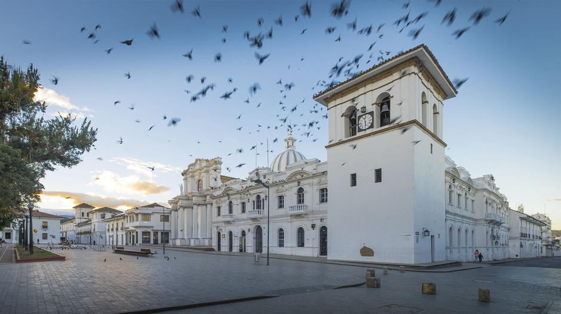

El riesgo es que te quieras quedar


Popayan - La ciudad blanca de Colombia

Una sensación de paz envuelve a quienes caminan por las calles de Popayán, entre las elegantes fachadas blancas de sus iglesias y casas. Fundada en 1537 por Sebastián de Belalcázar, la capital del Cauca es uno de los centros religiosos más importantes de Colombia. Desde esta ciudad, donde se disfruta de una gastronomía de alto nivel, es posible conocer paisajes con montañas, valles y lagunas.
Popayán es considerado uno de los más bellos y mejor conservados de Colombia y América Latina.
La riqueza histórica y cultural de Popayán se refleja en sus edificaciones; al igual que en las celebraciones de Semana Santa, en las que las tradiciones son muy importantes. El departamento es habitado por comunidades indígenas Nasa, Guambianos y Emberas, entre otros, y cuenta con sitios donde los viajeros se relajan en fuentes de aguas termales.
Disfruta de nuestras fiestas como el Congreso Nacional Gastronómico, Festival de Música Religiosa y Semana Santa en Popayán.

Perfil del Autor
Scrollspy es un pulgin jQuery que hace seguimiento de ciertos elementos y en cual elemento esta centrada actualmente la pantalla del usuario. Nuestro demo principal de esto es nuestra tabla de contenidos en cada pagina de la documentación a lado derecho de la pagina. Al hacer clic en estos enlaces también se desplazará a la página de ese elemento.